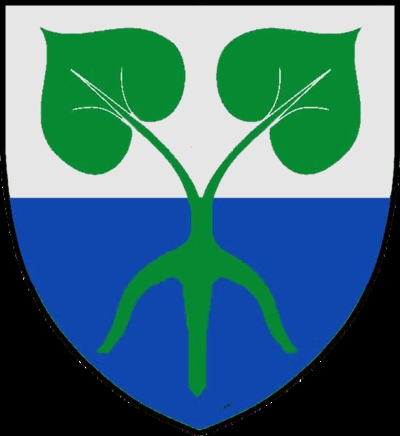
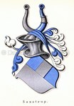
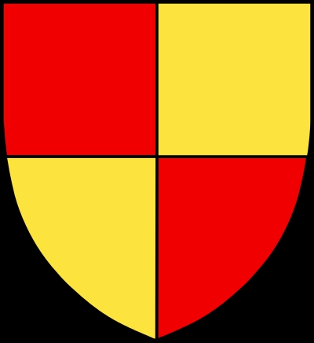

998052 Erik Andersen Gagge
* omkring 1450 Stostorp, Skåne
† 1500 Bidstrup, Viborg, Danmark
Väpnare
Blev ca 50 år
1996104 Anders Aagesen Gagge til Stostorp
* omkring 1430 Fårebäck herrgård, Oxie, Malmö (M)
† 1492 Stostorp, Skåne
Blev ca 62 år
3992208 Aage Larsen
* omkring 1380 Naffentorp (M)
† efter 1400 Skåne, Sverige
3992209 Katrine Andersdatter Gagge
* omkring 1385 Jordberga, Trelleborg (M)
† Skåne, Sverige
7984418 Anders Nielsen (Hollunger) Gagge
* omkring 1335
7984419 Lang

1996105 Birgitte Eggertsdatter Frille
* omkring 1435
† 1492
Blev ca 57 år
3992210 Eggert Frellavsen Frille
* omkring 1420 Danmark
† efter 1501
Länsman på Höneborg
7984420 Frellav Håkansson
* omkring 1400 Danmark
† efter 1457 Danmark

3992211 Helvig Axelsdatter Saxstrup
* före 1450
7984422 Axel Saxstrup
* före 1428 Halmstad (N)
† efter 1487 Vram (M)
Landsdommare i Skåne
Blev minst 60 år

7984423 Ellen Andersdotter Thott
* före 1430
†